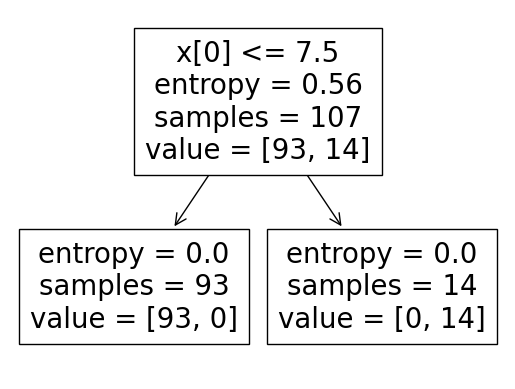

import numpy as np
import pandas as pd
import matplotlib.pyplot as plt
from sklearn.tree import DecisionTreeClassifier
from sklearn.model_selection import train_test_split
from collections import OrderedDict
from sklearn.metrics import confusion_matrix, accuracy_score, recall_score, precision_score, f1_score
from sklearn import tree
dataSenin = "https://raw.githubusercontent.com/wahyuarilsaputra/dataset/main/Senin.csv"
senin = pd.read_csv(dataSenin,delimiter=';')
dataSelasa = "https://raw.githubusercontent.com/wahyuarilsaputra/dataset/main/Selasa.csv"
selasa = pd.read_csv(dataSelasa,delimiter=';')
dataRabu = "https://raw.githubusercontent.com/wahyuarilsaputra/dataset/main/Rabu.csv"
rabu = pd.read_csv(dataRabu,delimiter=';')
dataKamis = "https://raw.githubusercontent.com/wahyuarilsaputra/dataset/main/Rabu.csv"
kamis = pd.read_csv(dataKamis,delimiter=';')
dataJumat = "https://raw.githubusercontent.com/wahyuarilsaputra/dataset/main/Jumat.csv"
jumat = pd.read_csv(dataJumat,delimiter=';')
dataSabtu = "https://raw.githubusercontent.com/wahyuarilsaputra/dataset/main/Sabtu.csv"
sabtu = pd.read_csv(dataSabtu,delimiter=';')
dataMinggu = "https://raw.githubusercontent.com/wahyuarilsaputra/dataset/main/Minggu.csv"
minggu = pd.read_csv(dataMinggu,delimiter=';')
minggu
| Tanggal | Nama | Alamat | Pekerjaan | JP_Dewasa | JP_Pelajar | Pesan Kesan | Jumlah per hari | Kategori | |
|---|---|---|---|---|---|---|---|---|---|
| 0 | 04-Sep-22 | Ari A | Kediri | Polri | 6 | 1 | NaN | 7 | 0 |
| 1 | 04-Sep-22 | Yunanik | Jl.Slamet Riyadi,Pasuruan | Swasta | 7 | 2 | NaN | 9 | 1 |
| 2 | 04-Sep-22 | Suntol | Pati | Swasta | 4 | 0 | NaN | 4 | 0 |
| 3 | 04-Sep-22 | Novi | Jl.RadenWijaya gg 3 | Pelajar | 3 | 2 | NaN | 5 | 0 |
| 4 | 04-Sep-22 | Revan | Dlanggu | NaN | 3 | 0 | NaN | 3 | 0 |
| ... | ... | ... | ... | ... | ... | ... | ... | ... | ... |
| 149 | 01-Oct-22 | Amien Widodo | ITSSurabaya | Dosen | 120 | 0 | NaN | 120 | 1 |
| 150 | 01-Oct-22 | Ilham Wahyudi | Megaluh | Swasta | 2 | 1 | NaN | 3 | 0 |
| 151 | 01-Oct-22 | Uus Y | Bukit Patma,Surabaya | Swasta | 4 | 1 | NaN | 5 | 0 |
| 152 | 01-Oct-22 | Ika rahma (SMPN 8 Malang) | Malang | Siswa & Guru | 30 | 25 | NaN | 55 | 1 |
| 153 | 01-Oct-22 | Moch.Mussyariful A | UTM | Mahasiswa | 1 | 1 | NaN | 2 | 0 |
154 rows × 9 columns
label = ['Tanggal','Nama','Alamat','Pekerjaan','Pesan Kesan']
# hasil = data.drop(columns = label)
hasilSenin = senin.drop(columns = label)
hasilSelasa = selasa.drop(columns = label)
hasilRabu = rabu.drop(columns = label)
hasilKamis = kamis.drop(columns = label)
hasilJumat = jumat.drop(columns = label)
hasilSabtu = sabtu.drop(columns = label)
hasilMinggu = minggu.drop(columns = label)
#Menghilangkan Missing Value
hasilSenin = hasilSenin.dropna().astype(int)
hasilSelasa = hasilSelasa.dropna().astype(int)
hasilRabu = hasilRabu.dropna().astype(int)
hasilKamis = hasilKamis.dropna().astype(int)
hasilJumat = hasilJumat.dropna().astype(int)
hasilSabtu = hasilSabtu.dropna().astype(int)
hasilMinggu = hasilMinggu.dropna().astype(int)
percent_amount_of_test_data = 0.3
# X1 = hasil.iloc[:,2:3].values
# Y1 = hasil.iloc[:,3].values
XSenin = hasilSenin.iloc[:,2:3].values
YSenin = hasilSenin.iloc[:,3].values
XSelasa = hasilSelasa.iloc[:,2:3].values
YSelasa = hasilSelasa.iloc[:,3].values
XRabu = hasilRabu.iloc[:,2:3].values
YRabu = hasilRabu.iloc[:,3].values
XKamis = hasilKamis.iloc[:,2:3].values
YKamis = hasilKamis.iloc[:,3].values
XJumat = hasilJumat.iloc[:,2:3].values
YJumat = hasilJumat.iloc[:,3].values
XSabtu = hasilSabtu.iloc[:,2:3].values
YSabtu = hasilSabtu.iloc[:,3].values
XMinggu = hasilMinggu.iloc[:,2:3].values
YMinggu = hasilMinggu.iloc[:,3].values
# X_train, X_test, y_train, y_test = train_test_split(X1, Y1, test_size = percent_amount_of_test_data, random_state=0)
X_train1, X_test1, y_train1, y_test1 = train_test_split(XSenin, YSenin, test_size = percent_amount_of_test_data, random_state=0)
X_train2, X_test2, y_train2, y_test2 = train_test_split(XSelasa, YSelasa, test_size = percent_amount_of_test_data, random_state=0)
X_train3, X_test3, y_train3, y_test3 = train_test_split(XRabu, YRabu, test_size = percent_amount_of_test_data, random_state=0)
X_train4, X_test4, y_train4, y_test4 = train_test_split(XKamis, YKamis, test_size = percent_amount_of_test_data, random_state=0)
X_train5, X_test5, y_train5, y_test5 = train_test_split(XJumat, YJumat, test_size = percent_amount_of_test_data, random_state=0)
X_train6, X_test6, y_train6, y_test6 = train_test_split(XSabtu, YSabtu, test_size = percent_amount_of_test_data, random_state=0)
X_train7, X_test7, y_train7, y_test7 = train_test_split(XMinggu, YMinggu, test_size = percent_amount_of_test_data, random_state=0)
### Dictionary to store model and its accuracy
model_accuracy = OrderedDict()
### Dictionary to store model and its precision
model_precision = OrderedDict()
### Dictionary to store model and its recall
model_recall = OrderedDict()
### Applying Decision Tree Classification model
decision_tree_classifier = DecisionTreeClassifier(criterion = 'entropy', random_state = 15)
# tree = decision_tree_classifier.fit(X_train, y_train)
treeSenin = decision_tree_classifier.fit(X_train1, y_train1)
treeSelasa = decision_tree_classifier.fit(X_train2, y_train2)
treeRabu = decision_tree_classifier.fit(X_train3, y_train3)
treeKamis = decision_tree_classifier.fit(X_train4, y_train4)
treeJumat = decision_tree_classifier.fit(X_train5, y_train5)
treeSabtu = decision_tree_classifier.fit(X_train6, y_train6)
treeMinggu = decision_tree_classifier.fit(X_train7, y_train7)
### Predicting the Test set results
# Y_pred_dc = decision_tree_classifier.predict(X_test)
Y_pred_dc1 = decision_tree_classifier.predict(X_test1)
Y_pred_dc2 = decision_tree_classifier.predict(X_test2)
Y_pred_dc3 = decision_tree_classifier.predict(X_test3)
Y_pred_dc4 = decision_tree_classifier.predict(X_test4)
Y_pred_dc5 = decision_tree_classifier.predict(X_test5)
Y_pred_dc6 = decision_tree_classifier.predict(X_test6)
Y_pred_dc7 = decision_tree_classifier.predict(X_test7)
### Making the confusion matrix
cm1 = confusion_matrix(y_test1, Y_pred_dc1)
# cm2 = confusion_matrix(y_test2, Y_pred_dc2)a
# cm3 = confusion_matrix(y_test3, Y_pred_dc3)
# cm4 = confusion_matrix(y_test4, Y_pred_dc4)
# cm5 = confusion_matrix(y_test5, Y_pred_dc5)
# cm6 = confusion_matrix(y_test6, Y_pred_dc6)
# cm7 = confusion_matrix(y_test7, Y_pred_dc7)
### Printing the accuracy, precision, and recall of the model
print('Confusion matrix for Decision Tree\n',cm1)
decision_tree_accuracy = round(100 * accuracy_score(y_test1, Y_pred_dc1), 2)
model_accuracy['Decision Tree'] = decision_tree_accuracy
decision_tree_precision = round(100 * precision_score(y_test1, Y_pred_dc1, average = 'weighted'), 2)
model_precision['Decision Tree'] = decision_tree_precision
decision_tree_recall = round(100 * recall_score(y_test1, Y_pred_dc1, average = 'weighted'), 2)
model_recall['Decision Tree'] = decision_tree_recall
print('The accuracy of this model is {} %.'.format(decision_tree_accuracy))
print('The precision of this model is {} %.'.format(decision_tree_precision))
print('The recall of this model is {} %.'.format(decision_tree_recall))
Confusion matrix for Decision Tree
[[8 0]
[0 2]]
The accuracy of this model is 100.0 %.
The precision of this model is 100.0 %.
The recall of this model is 100.0 %.
FIRST_IDX = 0
result_test_knn = treeSenin.predict([[20]])
print(f"Customer : Putra Memiliki risk rating {result_test_knn[FIRST_IDX]} Pada metode Decision Tree model")
Customer : Putra Memiliki risk rating 1 Pada metode Decision Tree model
#visualisasi tree
VtreeSenin = tree.plot_tree(treeSenin)
VtreeSelasa = tree.plot_tree(treeSelasa)
VtreeRabu = tree.plot_tree(treeRabu)
VtreeKamis = tree.plot_tree(treeKamis)
VtreeJumat = tree.plot_tree(treeJumat)
VtreeSabtu = tree.plot_tree(treeSabtu)
VtreeMinggu = tree.plot_tree(treeMinggu)

import pickle
# with open('Senin.pickle','wb') as r:
# pickle.dump(treeSenin,r)
# with open('Selasa.pickle','wb') as r:
# pickle.dump(treeSelasa,r)
# with open('Rabu.pickle','wb') as r:
# pickle.dump(treeRabu,r)
# with open('Kamis.pickle','wb') as r:
# pickle.dump(treeKamis,r)
# with open('Jumat.pickle','wb') as r:
# pickle.dump(treeJumat,r)
# with open('Sabtu.pickle','wb') as r:
# pickle.dump(treeSabtu,r)
# with open('Minggu.pickle','wb') as r:
# pickle.dump(treeMinggu,r)
# with open('acc','wb') as r:
# pickle.dump(decision_tree_accuracy,r)
# with open('VisualSenin','wb') as r:
# pickle.dump(VtreeSenin,r)
# with open('VisualSelasa','wb') as r:
# pickle.dump(VtreeSelasa,r)
# with open('VisualRabu','wb') as r:
# pickle.dump(VtreeRabu,r)
# with open('VisualKamis','wb') as r:
# pickle.dump(VtreeKamis,r)
# with open('VisualJumat','wb') as r:
# pickle.dump(VtreeJumat,r)
# with open('VisualSabtu','wb') as r:
# pickle.dump(VtreeSabtu,r)
# with open('VisualMinggu','wb') as r:
# pickle.dump(VtreeMinggu,r)